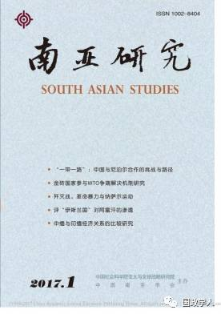

收录于合集


下载方式见底部
奥巴马政府的全球导弹防御政策与“萨德”在韩国的部署
刘磊聂 冰玥
中国海洋大学法政学院 中国海洋大学法学博士后流动站
评论
摘要： 奥巴马政府继承了小布什政府部署全球导弹防御系统的政策,在完成美国本土和东欧的反导部署之后,转向亚太特别是向东北亚地区扩展。亚太反导部署已经成为美国全球导弹防御计划的重要组成部分。2013年以来朝鲜核导计划的发展,特别是2016年的两次核试验促使美韩决定在韩国部署“萨德”反导系统。这使得东北亚国际关系和安全局势愈加复杂和危险,也给中国的安全与外交带来严峻挑战。中国有必要冷静分析和应对,从中美关系的角度寻求解决方案。 更多还原
关键词： 奥巴马政府; 导弹防御; “萨德”反导系统; 中美关系;
“一带一路”:中国与尼泊尔合作的挑战与路径
杨思灵 高会平
云南省社会科学院南亚研究所 昆明市社会科学院社会研究所
摘要： 作为中国的重要邻国,尼泊尔对中国提出的“一带一路”倡议表现出极为浓厚的兴趣,期冀能够在“一带一路”框架下加强与中国全方位的合作。在地缘战略选择上,尽管尼泊尔无法改变来自印度的压倒性影响力,但希望通过与中国的合作,在某种程度上摆脱尼泊尔的窘境。客观来讲,中尼合作拥有较好的历史基础,不过面临的挑战也不容忽视,尤其是南亚地区的安全困境、合作规模及方向、尼泊尔的政治状况、“弱+弱”合作模式的瓶颈等均对中尼在“一带一路”框架下的合作构成重要影响,如何克服这些挑战是未来推进中尼合作面临的重要课题。 更多还原
关键词： 一带一路; 中国; 尼泊尔; 印度; 南亚安全困境弱+弱合作模式;
金砖国家参与WTO争端解决机制研究
Alexandr Svetlicinii 张娟娟
澳门大学法学院西南科技大学法学院
摘要： 本文对金砖国家在世界贸易组织(WTO)争端解决机制中的参与情况进行了评价,其目的是为了评估金砖国家对维护和加强多边贸易治理平台中已经起到的和可能起到的作用。通过对金砖国家在WTO争端解决机制中的表现进行详细的定量、定性分析,本文论证了金砖国家并不像其他许多新兴经济体对待争端解决机制采取消极态度,而是在很大程度上成功地克服了参与WTO争端解决机制的障碍,并且积极运用该机制保护国家的贸易利益。虽然主要是作为第三方积极参与,但是金砖国家在彼此有“互动”的大部分案例中都采取一致的立场。本文还研究了金砖国家通过私营企业和其他利益相关者参与,进一步协调其在WTO争端解决机制中的各种活动的未来方向。这种协调能够产生非常必要的协同效益,为解决贸易争端和澄清世贸组织的贸易规则提供便利。
关键词： 金砖国家; 贸易多边主义; 世界贸易组织争端解决机制;
澳大利亚的南海政策:取向与限度
王晴锋
中央民族大学世界民族学人类学研究中心“中国文化走出去协同创新中心”
摘要： 20世纪60、70年代之交,纳萨尔派先后在西孟加拉邦的农村与城市地区实施歼灭战和“红色恐怖”,号召革命者武装消灭地主、富农和其他统治阶级。歼灭战以小分队的形式开展暗杀行动,试图以此唤醒民众,引导革命走向全面武装斗争。但歼灭战不仅未能充分动员群众,而且将公开的大众组织及其运动视为修正主义而加以排斥。歼灭战在短期内取得了一定成效,纳萨尔派在部分地区建立起红色基层政权,但很快在意识形态、战略和组织等方面产生严重后果,并直接招致政府的严厉镇压,这也是导致纳萨尔派内部分裂的重要原因。从总体上而言,作为革命策略的纳萨尔暴力是对国家暴力做出的回应。
关键词： 歼灭战; 毛派运动; 纳萨尔暴力; 印共(马列); 游击战;
阿富汗政治伊斯兰运动的变迁及其当代影响
闫伟
西北大学中东研究所
摘要： 政治伊斯兰是影响当代阿富汗至关重要的因素。20世纪中期,阿富汗城市中的现代宗教人士创建了政治伊斯兰的母体——“乌斯塔兹”。该组织最初为反对世俗化改革和左派的政治“异见者”,在阿富汗问题诞生后转变为抗苏运动的中坚,苏联撤军后又沦落为基于特定民族和地域的军阀。90年代初,塔利班崛起后,阿富汗政治伊斯兰在社会构成、民族关系、意识形态方面发生重大转向。阿富汗政治伊斯兰运动本质上是特定民族、部落借助宗教的旗号发动的社会政治运动。如今,以“新塔利班”为主体的政治伊斯兰仍是阿富汗重建面临的最大挑战。
关键词： 阿富汗重建; 政治伊斯兰; 塔利班; 伊斯兰促进会;
中缅与印缅经济关系的比较
卢光盛 冯立冰 张泽然
云南大学 周边外交研究中心 云南大学国际关系研究院
摘要： 本文比较中国、印度与缅甸的经济关系,通过梳理中缅、印缅经济关系的历史脉络、总体框架、合作平台与具体内容,分别探讨其背后的利益出发点及制约因素,进而把握中缅、印缅经济关系的总体情况与发展趋势。通过比较,本文发现中缅、印缅经济关系均经历了从缓慢发展、波动停止、逐渐升温再到全面提升的历史过程。与印度相比,中国与缅甸的经济关系所涉及的领域更广,合作深度更深。在经贸合作、油气开发和大型基础设施建设领域,中印之间存在竞合关系,但总体来看中国在资金和技术上占据优势。另外,印度在“东向政策”的指导下积极构建双多边合作机制有平衡“中国威胁”的意味,中国需针对具体情况采取措施,切实推进区域合作。
关键词： 中缅关系; 中印关系; 地缘经济; 比较研究;
民粹主义视角下的缅甸民主转型:基于综合调查数据的分析
邓云斐
云南省社会科学院东南亚研究所
摘要： 本文在梳理近期缅甸出现的民粹主义现象的基础上,利用“缅甸综合社会调查(2015)”的数据,着重分析了其民主转型中诱发和激化民粹主义的几个主要因素。文章指出,缅甸民主转型中政治重要性被人为放大,使民众在短期内表现出高度的政治热情。“救赎的”民主心态占据主导、对民主的高度期待和改变现状强烈愿望的叠加,成为民粹主义泛起的主要诱因。另外,由于缅甸国家整合程度较低,数据显示,按族群、宗教、地区等划分的不同社会群体的认同区隔明显,加之民主转型期间国内体制不顺、权力多元,政治博弈容易诱发和激化民粹主义情绪。
关键词： 缅甸; 民粹主义; 民主转型; 政治参与; 宗教冲突;
缅甸佛教民族主义的产生、发展及其实质——兼论对当代缅甸政治转型的影响
宋少军
云南大学历史与档案学院
摘要： 佛教民族主义在缅甸近代以来反抗英国殖民侵略、争取民族和国家独立的历史进程中曾发挥过重要作用。独立后,佛教民族主义在缅甸社会依然保持着强大的影响力。随着近年来政治转型不断推进,缅甸国内佛教民族主义出现一股强烈的极端主义思潮,成为近年来缅甸国内佛教徒同罗兴亚人穆斯林间宗教冲突不断激化的重要推手。在全球化不断发展的今天,过度政治化的佛教民族主义给缅甸社会带来的影响主要是消极的。如何应对国内佛教民族主义日益走向极端化的威胁,扭转当前缅甸国内族群宗教冲突不断加剧的趋势,是缅甸民盟新政府必须认真思考的问题。
关键词： 缅甸; 佛穆冲突; 罗兴亚人; 佛教民族主义;
获取方式：
公众号后台（聊天页面）发送“ 南亚研究 ”自动获取！
声 明
国政学人微信公众平台系非盈利学术平台。分享的目的是方便广大学人进行学术研究，促进学术的传播和交流，不做任何商业用途。如有任何权利问题，请直接与我们联系。
上划拖动查看 ↑↑↑
“国政学人”微信公众平台立足于政治学、国际政治与国际关系等专业领域，系统更新最新核心期刊与经典著作，兼顾社科学术研究方法和论文写作技巧的普及。“我们既生产学术，又做学术的搬运工。”“国政学人”致力于打造广大学人的掌上图书馆与高端学术传播平台，立志为中国国际政治学的传播与发展贡献自己的一份力量。
如果您有佳作或批评建议，请编辑内容发送至guozhengxueren@163.com, 欢迎来信与投稿！请动动手指分享到您身边的学术群、朋友圈，让国政学人惠及更多的朋友，